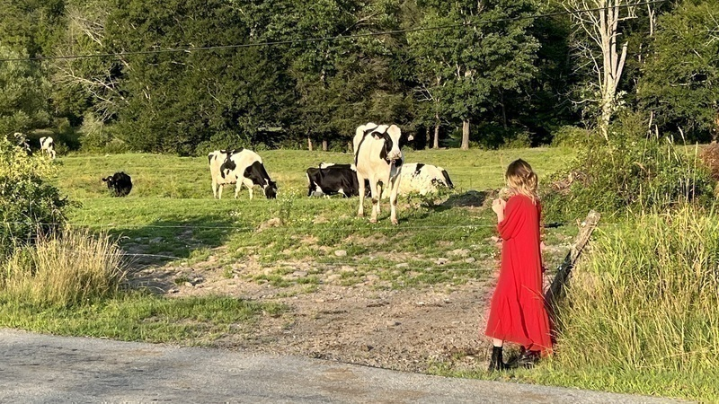

log

half hidden studio for the weekend with memory object

very excited to be performing with heather bowlan, julia gwiazdowski, alexandra naughton, aaron gadbury, amy saul-zerby, and peter webb at the launch reading for alexandra's novel American Mary on September 14th at Small Works Gallery in Philly. I'm also very excited about this cool flyer ebs sanders made for the event. If you're in or around Philly, please come join us!
I've started thinking about trim sizes again and generally feel like I'm entering a season for considering text's relationship to and embodiment in physical space. That seems exciting to me.

office hours w/ finn

finn in a blanket

a good climbing tree
[ former]
[further]
[final]
[first]
williamthazard [at] pm.me